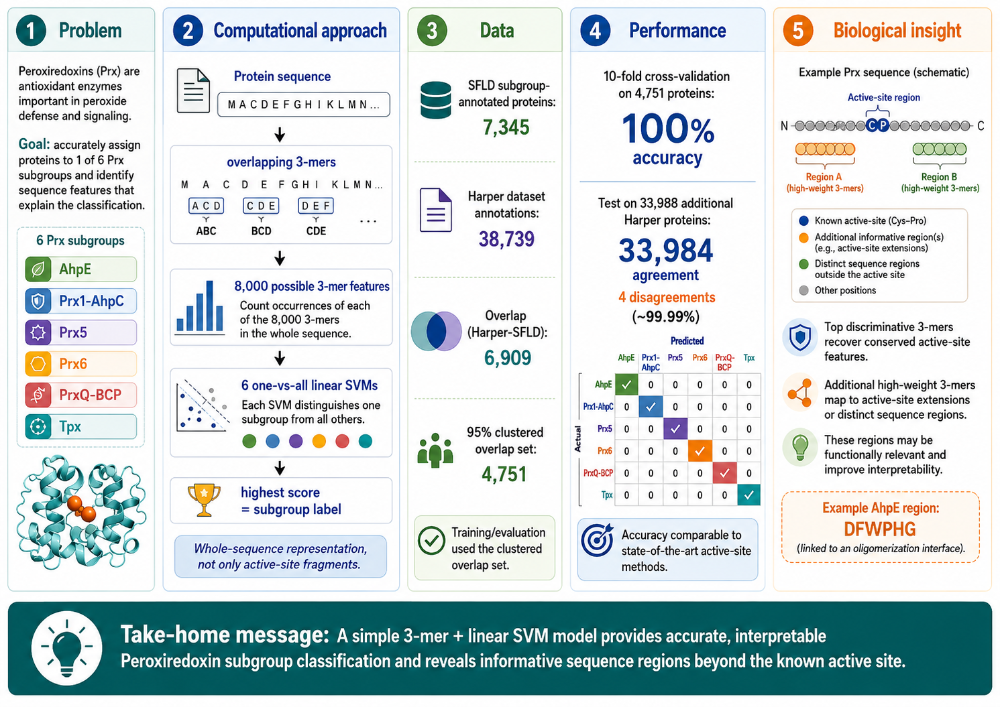
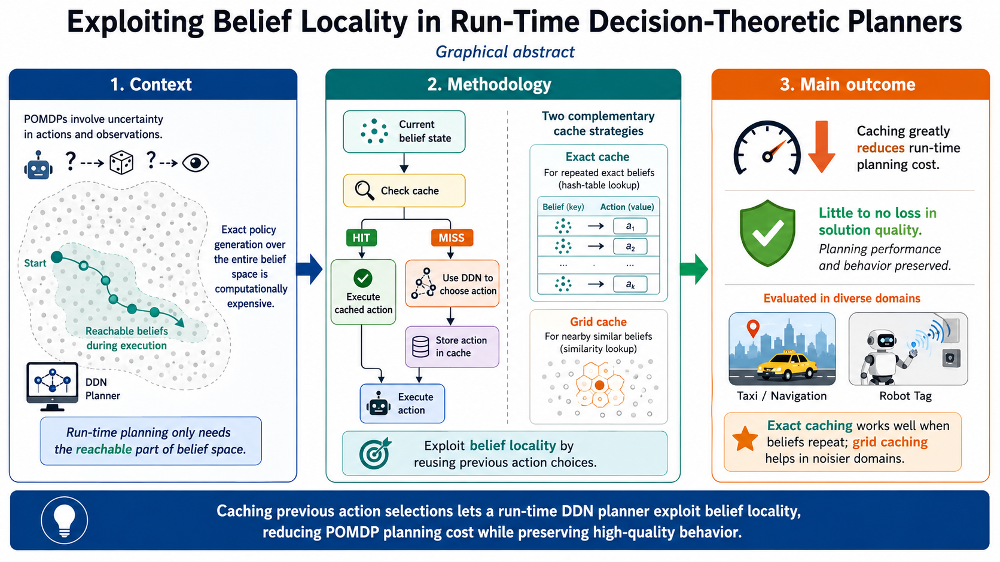

Publications
Publications are listed by year and format. All are peer-reviewed unless otherwise stated at the end of the entry. Citation counts are from Google Scholar, corrected to remove “local” citations (citations in later work by one of the same authors) and last updated 2026.07.22. Summary images and keyword phrases were partially generated by generative AI tools.
Alternative Listings
2010 - 2019
2018
Preprint
- “K-mer Based Classifiers Extract Functionally Relevant Features To Support Accurate Peroxiredoxin Subgroup Distinction.” Jiajie Xiao, William Turkett. bioRxiv.
- Citations: 2
- Research Areas: Bioinformatics
- Keyword Phrases: Peroxiredoxin subgroup classification, k-mer sequence analysis, support vector machines, protein function annotation, interpretable bioinformatics
- Peer Review Status: Non Peer Reviewed
- Data Repository
- Summary Image:

2016
Journal
- “Impact of the Type I Interferon Receptor on the Global Gene Expression Program During the Course of Dendritic Cell Maturation Induced by Polyinosinic Polycytidylic Acid.” Amy Olex, William Turkett, Kristina Brzoza-Lewis, Jacquelyn Fetrow, Elizabeth Hiltbold. Journal of Interferon & Cytokine Research 36 (6).
- Citations: 4
- Research Areas: Bioinformatics
- Keyword Phrases: temporal expression analysis, network-based data integration, clustering, active subnetwork identification
Conference
- “A STEM Incubator to Engage Students in Hands-on, Relevant Learning: A Report from the Field.” Jennifer Burg, Paul Pauca, William Turkett, Pete Santago. Proceedings of the 2016 ACM Conference on Innovation and Technology in Computer Science Education (ITICSE).
- Citations: 11
- Research Areas: Computer Science Education
- Keyword Phrases: hands-on learning, computer science education, vertical integration, peer leader/apprentice mentoring, inclusive participation
2015
Conference
- “An Evolutionary Strategy For Resilient Cyber Defense.” Errin Fulp, Donald Gage, David John, Matthew McNiece William Turkett, Xin Zhou. Proceedings of the 2015 IEEE Global Communications Conference (GLOBECOM).
- Citations: 9
- Research Areas: Cybersecurity
- Keyword Phrases: resilient and adaptive cybersecurity, moving target defense, configuration management, evolutionary algorithms
- “Engaging Non-Traditional Students in Computer Science through Socially-Inspired Learning and Sustained Mentoring.” Jennifer Burg, Paul Pauca, William Turkett, Errin Fulp, Samuel Cho, Peter Santago, Daniel Canas, Donald Gage. Proceedings of the 46th ACM Technical Symposium on Computer Science Education (SIGCSE).
- Citations: 21
- Research Areas: Computer Science Education
- Keyword Phrases: socially-inspired learning, computer science education, peer leader/apprentice mentoring, inclusive participation
2014
Journal
- “Integration Of Gene Expression Data With Network-Based Analysis To Identify Signaling And Metabolic Pathways Regulated During The Development Of Osteoarthritis.” Amy Olex, William Turkett, Jacquelyn Fetrow, Richard Loeser. Gene 542 (1).
- Citations: 58
- Research Areas: Bioinformatics
- Keyword Phrases: temporal expression analysis, network-based data integration, clustering, active subnetwork identification, enrichment analysis
Conference
- “Evolutionary Based Moving Target Cyber Defense.” David John, Robert Smith, William Turkett, Daniel Canas, Errin Fulp. Proceedings of the Companion Publication of the 2014 Annual Conference on Genetic and Evolutionary Computation (GECCO).
- Citations: 57
- Research Areas: Cybersecurity
- Keyword Phrases: directed mutation, configuration management, moving target defense, adaptive cybersecurity, evolutionary algorithms
2013
Journal
- “A Kinetic Analysis Of The Auxin Transcriptome Reveals Cell Wall Remodeling Proteins That Modulate Lateral Root Development In Arabidopsis.” Daniel Lewis, Amy Olex, Stacey Lundy, William Turkett, Jacquelyn Fetrow, Gloria Muday. The Plant Cell 25 (9).
- Citations: 159
- Research Areas: Bioinformatics
- Keyword Phrases: temporal expression analysis, clustering, enrichment analysis, transcriptome meta-analysis
Workshop
- “Hierarchical Modeling To Facilitate Personalized Word Prediction For Dialogue.” Richard Freedman, Jingyi Guo, William Turkett, Paul Pauca. Proceedings of the 27th AAAI Conference on Artificial Intelligence Workship on Plan, Activity, and Intent Recognition.
- Citations: 5
- Research Areas: Machine Learning
- Keyword Phrases: personalized word prediction, hierarchical language modeling, assistive communication
2011
Workshop
- “Graph Mining Of Motif Profiles For Computer Network Activity Inference.” William Turkett, Errin Fulp, Charles Lever, Edward Allan. Proceedings of the 9th Workshop on Mining and Learning with Graphs (MLG).
- Citations: 11
- Research Areas: Cybersecurity
- Keyword Phrases: application protocol classification, network traffic analysis, interaction graph analysis, network motif mining
2010
Conference
- “Comparison Of Co-Temporal Modeling Algorithms On Sparse Experimental Time Series Data Sets.” Edward Allen, James Norris, David John, Stan Thomas, William Turkett, Jacquelyn Fetrow. Proceedings of the 2010 IEEE International Conference on BioInformatics and BioEngineering (BIBE).
- Citations: 0
- Research Areas: Bioinformatics
- Keyword Phrases: co-temporal modeling, biological network reconstruction, Bayesian network structure learning, computational algebra modeling, time-series modeling
2002 - 2009
2009
Conference
- “Using Network Motifs To Identify Application Protocols.” Edward Allan, William Turkett, Errin Fulp. Proceedings of the 2009 IEEE Global Communications Conference (GLOBECOM).
- Citations: 35
- Research Areas: Cybersecurity
- Keyword Phrases: application protocol classification, network traffic analysis, interaction graph analysis, network motif mining
2008
Conference
- “In-the-Dark Network Traffic Classification Using Support Vector Machines.” William Turkett, Andrew Karode, Errin Fulp. Proceedings of the 20th National Conference on Innovative Applications of Artificial Intelligence (IAAI).
- Citations: 15
- Research Areas: Cybersecurity
- Keyword Phrases: application protocol classification, network traffic analysis, spectrum flow representation, in-the-dark analysis, support vector machines, interpretable traffic classification
2007
Conference
- “Dynamic DDN Construction for Lightweight Planning Architectures.” William Turkett. Proceedings of the 2007 20th International Florida Artificial Intelligence Research Society Conference (FLAIRS).
- Citations: 0
- Research Areas: Agents, Probabilistic Reasoning
- Keyword Phrases: run-time decisio making, dynamic decision network construction, reachability-based pruning, partially observable Markov decision processes, lightweight planning
2006
Conference
- “Reconstructing Networks Using Co-Temporal Functions.” Edward Allen, Anthony Pecorella, Jacquelyn Fetrow, Daivd John, William Turkett. Proceedings of the 44th Annual ACM Southeast Conference (ACMSE).
- Citations: 0
- Research Areas: Bioinformatics
- Keyword Phrases: co-temporal modeling, biological network reconstruction, Bayesian network structure learning, computational algebra modeling, time-series modeling
Workshop Poster
- “Static Bayesian Modeling Of Biological Time-Series Data.” William Turkett. Proceedings of the Workshop on Probabilistic Modeling and Machine Learning in Structural and Systems Biology (PMSB).
- Citations: 0
- Research Areas: Bioinformatics
- Keyword Phrases: biological network reconstruction, Bayesian network structure learning, time-series modeling, static vs dynamic
2005
Journal
- “Correlation Of Amino Acid Preference and Mammalian Viral Genome Type.” John Rose, William Turkett, Iulia Oroian, William Laegreid, John Keele. Bioinformatics 21 (8).
- Citations: 7
- Research Areas: Bioinformatics
- Keyword Phrases: viral genome classification, amino acid sequence, k-mer spectrum representation, support vector machines
- Data Repository
- Code Repository
Conference
- “Exploiting Belief Locality In Run-Time Decision-Theoretic Planners.” William Turkett, John Rose. Proceedings of the 2005 18th International Florida Artificial Intelligence Research Society Conference (FLAIRS).
- Citations: 0
- Research Areas: Agents, Probabilistic Reasoning
- Keyword Phrases: belief locality, belief state caching, run-time decision making, partially observable Markov decision process (POMDP), dynamic decision networks, grid-based approximation
- Summary Image:

2004
Dissertation
- “Robust Multiagent Plan Generation And Execution With Decision Theoretic Planners.” William Turkett. University of South Carolina Department of Computer Science.
- Citations: 4
- Research Areas: Agents, Probabilistic Reasoning
- Keyword Phrases: multiagent systems, decision-theoretic planning, dynamic decision networks, partially observable Markov decision process (POMDP), hierarchical planning, social utility model, POMDP scalability
- Peer Review Status: Non Peer Reviewed
2003
Journal
- “Agents On The Web: Massive Deliberation.” William Turkett, John Rose, Michael Huhns. IEEE Internet Computing 7 (1).
- Citations: 2
- Research Areas: Agents
- Keyword Phrases: distributed planning, multiagent systems, dynamic decision networks, decision-theoretic planning, continual planning, emergent behavior
- Peer Review Status: Invited, Non Peer Reviewed
Workshop
- “Planning With Agents: An Efficient Approach Using Hierarchical Dynamic Decision Networks.” William Turkett, John Rose. Proceedings of the 2003 4th International Workshop on Engineering Societies in the Agent World (ESAW).
- Citations: 3
- Research Areas: Agents, Probabilistic Reasoning
- Keyword Phrases: hierarchical agent planning, dynamic decision networks, partially observable Markov decision process (POMDP), multiagent systems
2002
Conference
- “An Agent Architecture For Long-Term Robustness.” John Rose, Michael Huhns, Soumik Sinha Roy, William Turkett. Proceedings of the 1st International Joint Conference on Autonomous Agents and Multiagent Systems (AAMAS).
- Citations: 6
- Research Areas: Agents
- Keyword Phrases: multiagent systems, philosophical agent architecture, long-term mission robustness, misinformation detection and handling
Workshop
- “An Evaluation Of Philosophical Agent Architectures For Mission Robustness.” John Rose, William Turkett, Michael Huhns, Soumik Sinha Roy. Proceedings of the 2002 Workshop on Radical Agent Concepts (WRAC).
- Citations: 2
- Research Areas: Agents
- Keyword Phrases: multiagent systems, philosophical agent architecture, long-term mission robustness, misinformation detection and handling